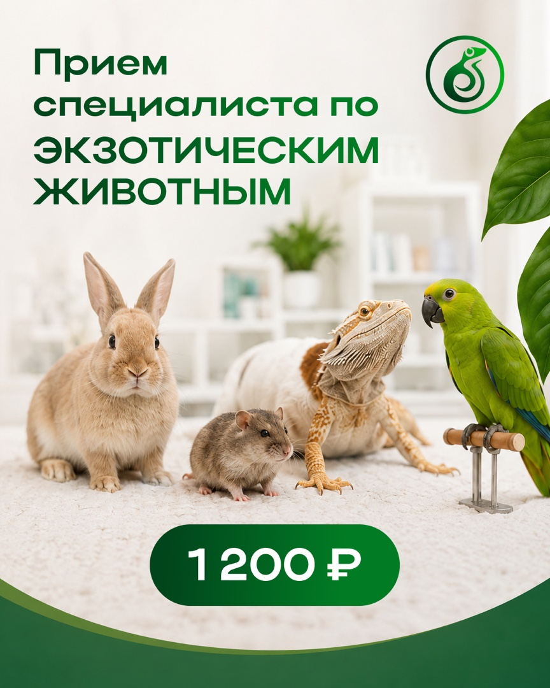

Ветеринарные услуги · ВКонтакте · август 2026
Как превратить сложные ветеринарные темы в понятный месяц контента
Для центра здоровья животных «Атерис» собрали 10 постов: полезные памятки, экспертные темы, разборы мифов и понятные причины записаться. Две карусели вошли в пакет, ещё одну сделали бонусом.
Комплект согласован и загружен в черновики. На момент проверки публикации ещё не начались, поэтому охваты, записи и другие метрики здесь не заявлены.



Маркетинговая задача
Не просто заполнить ленту, а помочь владельцу понять, когда и к кому обращаться
У ветеринарного центра много направлений, а у человека мало времени на разбор терминов. Контент должен быстро объяснить проблему, показать компетенции и дать спокойный следующий шаг.
Что волнует владельца
«Это опасно? Что делать сейчас? К какому специалисту идти?»
Как подготовиться к приёму?
Нужна ли голодная выдержка?
Почему питомец ведёт себя иначе?
Кто лечит экзотических животных?
Когда нельзя откладывать визит?
Что отвечает контент
Сложное становится ясным до записи
- 01Замечаем проблему
Показываем признаки и бытовые ситуации, которые легко пропустить.
- 02Объясняем без перегруза
Памятки и карусели раскладывают тему по шагам.
- 03Показываем специализацию
В том числе работу центра с экзотическими животными.
- 04Даём следующий шаг
Человек понимает, зачем и к кому записываться.
Логика месяца
Четыре роли контента — один путь к доверию
Темы не повторяют один и тот же рекламный призыв. Каждая группа решает отдельную задачу и поддерживает следующую.
Практическая польза
Перевозка, подготовка к приёму и признаки боли превращаются в памятки.
Экспертность
Объясняем роли специалистов и редкую работу с экзотическими животными.
Разбор мифов
Исправляем привычные заблуждения без запугивания и давления.
Причина записаться
Связываем проблему, помощь специалиста и понятный следующий шаг.
Сохранить и применить
Пошаговые инструкции и подготовка к визиту.
Понять, кому доверить
Специалисты, процедуры и направления центра.
Убрать ложную уверенность
Черепахи, профилактика и домашний уход.
Перейти к записи
Первичный приём и помощь экзотическим животным.
Продукт внутри
План, реальные макеты и две карусели целиком
Можно посмотреть все десять тем, безопасную подборку готовой ленты и пролистать две полные серии по семь слайдов.
Утверждённая структура
10 тем с разными задачами
В плане есть польза, экспертность, работа с мифами и предложения. Цели описывают роль материалов, а не обещанный результат.
Готовая лента
Семь безопасных макетов без персональных данных
Три материала не показаны публично: в исходных макетах есть данные или узнаваемые сотрудники. Их темы и объём учтены в плане.
Основная карусель · 7 слайдов
Как безопасно перевезти питомца к ветеринару
Полезная серия даёт владельцу понятную последовательность действий: от выбора переноски до подготовки к дороге.
Роль: сохранить и применить
Одна тема превращается в маленький практический гид
- 01Зацепка и обещание пользы
- 02Выбор безопасной переноски
- 03Подготовка к дороге
- 04Комфорт и спокойствие питомца
- 05Что взять с собой
- 06Чего не делать в пути
- 07Короткое закрепление
1 / 7
Карусель в подарок · 7 слайдов
Скрытые опасности для питомца дома
Бонус — не случайный макет. Он продолжает полезную линию месяца и даёт бренду ещё один сохраняемый материал.
Дополнительная ценность
Ещё один повод сохранить пост и вернуться к бренду
Серия показывает привычные домашние ситуации глазами владельца животного и завершает тему понятной памяткой.
+7финальных слайдов сверх основного пакета
1 / 7
Как дошли до финала
От брифа до десяти черновиков в календаре
В кейсе виден не только дизайн. План прошёл проверку фактов, материалы — правки и согласование, после чего комплект загрузили в систему публикации.
- 01Бриф и паспортготово
Зафиксировали услуги, аудиторию, вопросы клиентов, тон и цель.
- 02Контент-план и текстыготово
Распределили 10 тем между четырьмя ролями контента.
- 03Проверка фактов1 круг
Уточнили профессиональные формулировки и заменили несколько тем.
- 04Дизайн и правкиготово
Собрали единую визуальную систему и внесли замечания.
- 05Согласованиеутверждено
Финальные файлы подтвердили для передачи в публикацию.
- 06Загрузказагружено
10 постов, включая 3 карусели с бонусной, добавили черновиками.
Плановые даты стояли с 6 по 24 августа 2026 года. Проверка проведена 5 августа, поэтому факт выхода и показатели публикаций ещё отсутствуют.
Почему пакет выглядит цельно
Маркетолог, редактор, дизайнер и менеджер работают как одна система
Маркетолог
Связывает темы с вопросами аудитории и задачей бизнеса.
Редактор
Переводит экспертные темы на понятный язык и проводит правки.
Дизайнер
Собирает одиночные посты и карусели в одной системе.
Менеджер
Ведёт согласование и передаёт готовый комплект в публикацию.
Границы доказательств
Показываем готовый продукт, не придумывая результаты
Этот кейс уже позволяет оценить стратегию, тексты, дизайн и организованность процесса. Для цифр после публикации нужна отдельная аналитика.
Что подтверждено
- 10 постов для ВКонтакте;
- 8 одиночных публикаций и 2 карусели;
- бонусная карусель из 7 слайдов;
- 29 финальных визуальных файлов;
- один содержательный круг правок;
- согласование и загрузка 10 черновиков.
Чего мы не заявляем
Фактический выход всех публикаций, охваты, просмотры, сохранения, заявки, записи, продажи или рост аудитории пока не подтверждены.
Плановые публикации начинались после даты проверки. Поэтому отсутствие метрик — нормальный статус проекта, а не скрытый результат.
Вашей аудитории тоже надо объяснять сложное?
Соберём месяц контента, который помогает понять, довериться и действовать
Маркетолог выстроит логику, команда подготовит тексты и дизайн, менеджер проведёт пакет через согласование и загрузку.